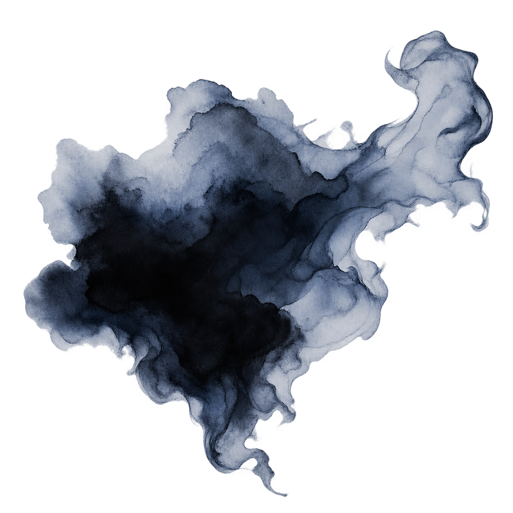
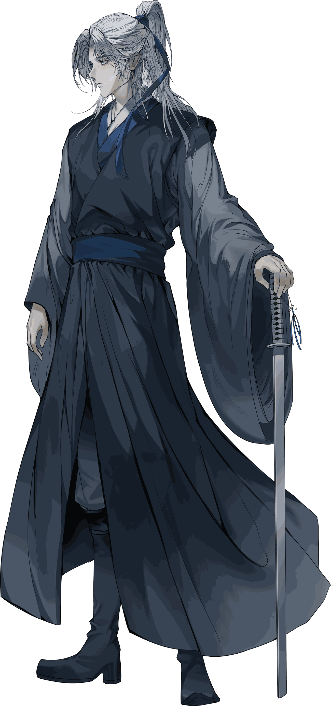
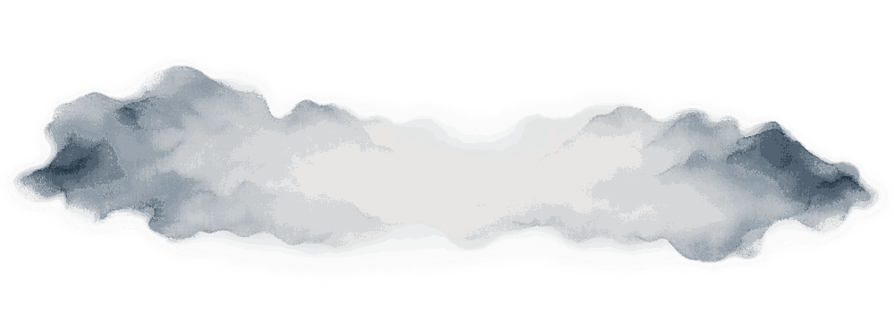
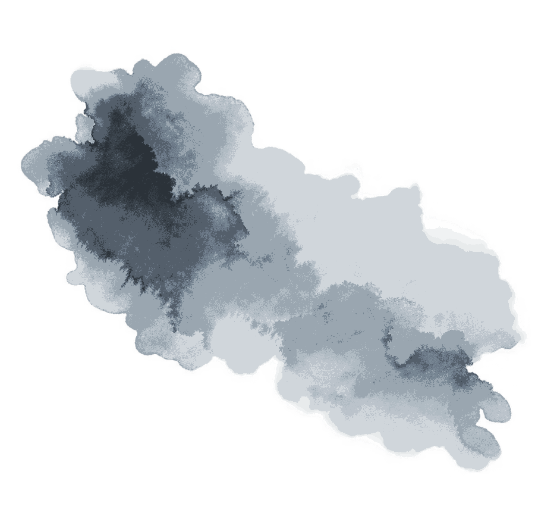
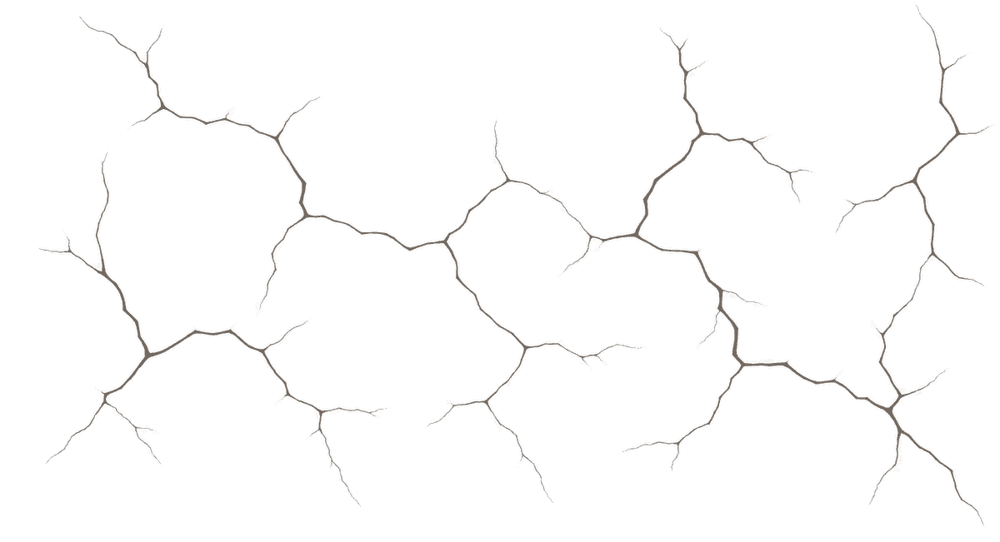
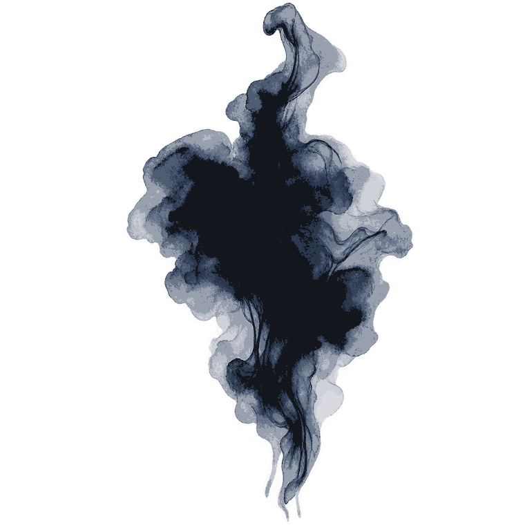

聲목소리
사시사철 조금 쉰 음성. 원래의 음성은 제법 낮은 축이나 목 안쪽이 마른 탓에 끝소리가 쉬이 긁히고 갈라진다. 말을 오래 하면 점차 탁해지는 것도 예삿일. 운을 오래 본 이들은 으레 그것이 본래 목소리인 줄 안다.

"남은 물 좀 가진 게 있나?"

외관
새하얗다기보다는 옅은 잿빛 한 방울을 탄 듯한 은백색 머리칼. 숱 많은 머리를 높이 틀어 묶고 남은 자락은 등 뒤로 길게 늘어뜨렸다. 얌전히 정돈해두는 데에는 애당초 뜻이 없는지, 움직이다 풀려난 잔머리는 손등으로 대충 쓸어 넘기기 일쑤에, 검을 잡거나 몸을 크게 쓸 일이 생기면 귀찮다는 듯 남은 머리까지 한데 걷어 묶곤 하였다. 머리를 동여맨 것은 여러 번 빛이 바래 이제는 먹청색에 가까워진 푸른 천. 해지면 기우고 끊어지면 덧댄 탓에 원래 꼴을 알아보기 어려울 만큼 낡았으나, 정작 다른 끈으로 갈아 맬 생각은 없는 듯하였다. 까닭을 물으면 오래 써서 편하다는 말이나 돌아올 뿐이었다.
눈은 흐린 날의 하늘을 닮은 옅은 회청색이었다. 볕이 독하면 눈이 쉬이 마르는 탓에 눈매가 절로 가늘어졌으며, 심하면 손등으로 몇 번이고 눈가를 문질렀다. 남들은 그 낯을 보고 언짢은 일이 있느냐 묻곤 했으나 대개는 단순히 눈이 건조해 심기가 불편한 것뿐이었다.
옷차림은 대체로 수수하였다. 짙은 회색빛 의복 위에 검푸른 포를 걸쳤으되 치장이라 할 만한 것은 거의 없었고, 대신 허리에는 장검과 물주머니가 양쪽에 나란히 매달려 있었다. 먼 길을 나서는 날이면 물주머니가 둘 셋으로 불어나 검보다 먼저 눈에 들어올 때도 있었다. 몸을 쓰는 데 거리낌이 없는 사람답게 소매나 옷자락도 늘 반듯한 것은 아니었다. 산길에서는 걷어붙였고 개울을 만나면 바짓단부터 올렸으며, 비를 맞아 포자락이 젖는 일에도 크게 괘념하지 않았다. 곱게 입은 옷을 곱게 보존하는 재주는 영 없는 편이었다.
검을 얼마나 오래 손에 익혀왔는지는 굳이 물을 것도 없었다. 손바닥과 손가락 마디에는 칼자루가 남긴 굳은살이 두텁게 박혀 있었고, 크고 거친 손은 얼굴만 보고 짐작한 인상과는 제법 달랐다.
月影 / 人事錄
FILE NO. 01-P

성격
어울리되 휩쓸리지 아니한다.
팔자가 사나우면 사람 성정도 모질어진다던가. 허나 서른두 해를 살아온 운을 보면 꼭 그런 것만도 아닌 모양이다.
운은 자못 잘 웃는 사내였다. 처음 보는 이와 상종하기를 어려워하지 않았으며, 한담이 좀 길어진다 싶으면 제 쪽에서 먼저 술자리나 산책을 청하기도 하였다. 꼭 깊은 연을 맺자는 뜻은 아니었다. 심심하면 사람을 불렀고 길동무가 있으면 함께 갔으며, 어울릴 만하면 굳이 혼자 있을 까닭도 없다 여기는 쪽이었다. 좋은 것은 좋다 이르고 싫은 것은 싫다 하되, 그 호오 하나로 사람의 전부를 헤아리려 들지는 않았으니 무릇 지난 일에도 그러하였다.
“스승? 죽었지. 내가 탈태하던 때에.”
— 雲
그 무거운 말을 내놓고도 낯빛 하나 달라지지 않았으며, 잠시 뒤에는 상대의 물주머니를 보며 전혀 다른 소리를 하였다.
“그보다 물 좀 있나?”
— 雲
굳이 사실을 감추는 사람은 아니었다. 제게 있었던 일쯤이야 누가 묻던 대강 일러주었으니. 다만 그날 무엇을 느꼈느냐, 괴로웠느냐, 아직 미련이 남았느냐고 캐묻기 시작하면 슬그머니 말끝이 흐려지는 것이다. 지난 일을 숨기지는 않으나 지나간 마음까지 남에게 헤집어 내놓아 보일 까닭은 없다 여기는 모양이었다.
기실 제 일에는 이렇듯 범연하면서도 남이 눈앞에서 영 못난 꼴을 하고 있으면 모른 체하는 재주는 없었다. 절뚝거리면서 괜찮다 우기는 자를 만나면 한참 낯빛을 살피는 대신 걸음을 멈추고 먼저 자리를 가리켰다.
“앉아.”
— 雲
괜찮다며 버티면 그제야 미간을 좁혔다.
“그래. 아주 멀쩡해서 걷는 꼴이 그 모양인가?”
— 雲
여상한 낯으로 꾸짖으며 말은 그리 해놓고 정작 답을 기다리지도 않았다. 제 짐에서 약을 꺼내 던져주거나, 필요하면 아예 소매를 걷어붙이고 손을 보태었다. 하여 그와 가까워지는 일 자체는 그리 어렵지 않았다. 다만 어디까지 가까워졌는가를 가늠하는 것은 또 별개의 문제였으니, 겉문은 늘 활짝 열려 있는데도 안채까지 드는 길은 사뭇 멀었다.
법도와 분수를 넘지 아니한다
남의 심사에 함부로 발을 들이는 일은 드물었다. 말하기 싫다 하면 더 묻지 않았고 홀로 있고 싶다 하면 자리도 곧잘 비켜주었으니, 제 속내를 들추는 손길을 달가워하지 않는 이가 어찌 남의 흉중이라고 함부로 헤집겠는가. 그러니 이만하면 제법 분별 있는 사람이라 할 만하겠으나...
허나 그 분별이라는 것도 일이 제 눈앞에서 영 그릇된 데로 흘러가기 시작하면 그리 오래 버티지는 못하였다.
가령 누가 금 간 담장을 굳이 타넘겠다고 나선다 치자. 처음에는 돌이 약하다느니 발 디딜 곳이 마땅찮다느니 한마디쯤 일러둘 것이다. 그래도 기어코 올라가겠다고 버티면 그제야 낯에 어이없다는 기색이 비치기 시작하였다.
“이젠 친우가 없다 못해 바닥과 인연을 맺을 셈인가?”
— 雲
말을 듣지 않는다 하여 멱살을 잡아 끌어내릴 위인은 아니었다. 허나 그렇다고 아래에 서서 구경만 하고 있을 성미도 못 되었으니, 기어코 오르겠다고 하면 한숨 한번 쉬고는 제 소매부터 걷었다.
“비켜봐. 쓸 데 없기는.......”
— 雲
그러고 제가 먼저 담장에 올라 발 디딜 곳을 찾아주는 식이었다. 운의 참견이란 대개 이와 같았다. 하지 말라며 사사건건 간섭하기보다, 돌아가는 형세가 영 그릇되었다 싶으면 말보다 손이 먼저 나갔다. 여럿이 붙어 한참을 끙끙댈 일을 제 손으로 끝낼 만하다 싶으면 소매부터 걷었고, 아예 일을 제 쪽으로 가져오는 일도 잦았다. 남을 뜻대로 부리고 싶은 욕심이 있었다기보다는 흐트러진 판을 흐트러진 채 두고 보는 일이 성미에 맞지 않았던 셈.
그 버릇은 월영에 몸을 둔 뒤에도 별반 달라지지 않았다. 어느 자가 사람 하나를 흠씬 두들겨 패놓고서는 그래도 죽이지는 않았다며 은근히 공을 세운 듯 굴기라도 하면, 운은 잠시 그 낯을 살핀 뒤 고개를 한 번 끄덕여 보였다.
“장하네. 반쯤 죽인 것은 공덕이라도 되는 줄 알았어.”
— 雲
말끝에는 으레 혀 차는 소리가 붙었으나, 그렇다고 성현의 도를 들먹이며 사람을 개과천선시키려 한 것은 아니었다. 애초 죄를 짓지 말라 훈계하고 다닐 사람이었으면 월영에서 그토록 오래 버티지도 못했을 터. 대신에 피 묻은 걸레를 집어 그자의 품으로 도로 던져주었다. 사람을 팼으면 뒤처리까지 할 것이고 기물을 부쉈으면 값을 치를 것. 제멋대로 굴 자유가 있다면 그 뒤에 따라오는 몫 또한 제 것이어야 한다는 생각이었으니, 운이 참견을 일삼으면서도 남의 인생까지 주무르려 들지 않았던 까닭도 바로 그 언저리에 있었다.
마음에 걸림이 적고 작은 일에 오래 매이지 아니한다.
운은 생김새만 두고 보면 사소한 것 하나에도 까다롭게 굴 법하였으나, 막상 한동안 함께 지내본 이들의 평은 대개 달랐다. 제 몸 하나 편히 두는 데 그리 많은 조건을 요구하지 않았던 까닭이다. 때가 되어 배가 고프면 하던 일을 잠시 밀어두고 밥부터 찾았으며, 길을 걷다가 볕 잘 드는 언덕을 만나면 공연히 서둘러 지나칠 것 없이 좀 쉬었다 가자 하였다. 견딜 만한 불편을 굳이 불평거리로 삼지는 않았으되, 반대로 마음에 든 것을 앞에 두고도 점잔을 빼느라 때를 놓치는 짓 역시 영 마뜩잖아하였다. 좋으면 좋은 것이고 싫으면 피하면 될 일이지, 그 사이에서 공연히 심사를 소모할 까닭이 무엇이랴.
그 가운데 물을 대하는 꼴은 더욱 거리낌이 없었다. 산길 끝에 맑은 개울이라도 하나 나타나는 날이면 조금 전까지의 행색은 온데간데없이 사라졌으니, 남들이 물살이며 건널 돌을 살피는 동안 어느새 바짓단부터 걷어붙이고 있었다. 큰비가 내린다 하여 사정이 달라질 것도 없었다. 남들이 처마 아래로 몰려갈 때면 도리어 밖으로 나와 빗물을 한껏 맞곤 하였는데, 누가 대체 왜 그러느냐 물은 적에는 기이하다는 듯 되묻기까지 했다.
“기껏 물이 저절로 쏟아지는데, 그걸 왜 피하는가? 자네는 나중에 돈벼락을 맞아도 꼭 피하게.”
— 雲
더구나 평소 갈라지던 목소리마저 비 오는 날에는 조금 맑아지는 터라 그런 날이면 말수도 덩달아 늘었다. 물 좋은 곳을 하나 알아두면 혼자만 알고 지나치는 법도 드물어, 며칠 뒤 별안간 사람을 하나 붙들고 같이 가자 청하는 일이 있었다. 어디가 얼마나 좋으냐 물으면 대강 가보면 안다 하고 먼저 검부터 찼으며, 어렵사리 따라나선 사람이 채 숨을 돌리기도 전에 제 짐 한 귀퉁이를 태연히 내미는 때도 있었으니.
“마침 잘 왔네. 이것 좀 들게.”
— 雲
사람을 부른 것이 길동무를 구함인지 짐꾼을 구함인지 분간하기 어려울 때가 종종 있었을 수도 있겠다. 그렇게 마음 맞는 이가 있으면 함께 돌아다녔고 지난번 들른 주막이 괜찮았다면 다음에는 사람 하나 데리고 또 가면 그만이었다. 좋은 것을 보아놓고 혼자만 아는 체할 만큼 점잖지도 않았거니와, 즐거운 자리에 벗이 하나 더 붙는 일을 번거롭다 여길 성정은 더더욱 아니었다.
일을 벌이는 데에도 이러한 성정이 얼마간 묻어났다. 앞뒤를 헤아리지 않는 무모한 자는 아니었건만, 이미 눈앞에 답이 어렴풋이 보이는데도 이 말 저 말만 보태며 제자리에서 맴도는 꼴은 오래 견디지 못하였다. 여럿이 둘러앉아 된다느니 어렵다느니 논박을 거듭하는 동안에도 처음 얼마간은 잠자코 들었으나, 같은 이야기가 두어 바퀴쯤 되풀이되고 나면 으레 얼굴에 싫증이 먼저 떠올랐다. 그러고는 자리를 털고 일어나 소매를 걷었으니, 오래 함께 일한 이라면 그 다음에 나올 말쯤은 듣지 않고도 알았을 터였다.
" 비켜봐. "
— 雲
아마 그 덕분이었으리라. 운은 제법 험한 곡절을 등에 지고도 평상시까지 초상집 사람처럼 살지는 않았다. 어제 일이 아무리 고약하였어도 아침이 되면 배는 다시 고팠고, 밤새 심사를 볶는다 한들 해 뜨는 시각이 늦어지는 것도 아니지 않은가. 그러므로 밥때에는 밥을 먹었고 구경할 만한 곳에서는 걸음을 늦추었으며, 재미있는 사람이 눈앞에 있으면 먼저 말을 걸었다. 정말 큰일이 닥친 때에는 마땅히 진중할 줄 알았으나, 크지도 않은 일을 굳이 키워 제 머리 위에 이고 사는 재주는 도통 없었다.

전승한 요괴 또는 신수 종류
강철이
예부터 사람들 입에 오르내리던 괴물. 강철이가 한 번 지나간 자리에는 마른 들과 갈라진 논, 볕 아래 누렇게 타들어 간 초목만 남는다 하여, 옛사람들은 가뭄과 흉년의 흉조를 일러 그 소행이라 하였다.
운이 힘을 펼친 뒤 남는 광경 또한 그 옛 전승과 기이하리만치 닮았다. 땅은 메마르고 풀잎은 생기를 잃으며, 머문 자리마다 마치 오래 비 한 방울 들지 않은 듯 삭막한 흔적이 남는 것이다.
허나 정작 그 힘을 이어받은 본인은 비 오는 날을 유달리 좋아하고, 틈만 나면 물가를 찾아다닌다. 가뭄을 몰고 온다는 괴물의 힘을 품고서 물을 좋아한다니, 세상사란 본디 이처럼 이치에 맞지 않는 구석 하나쯤은 품고 있는 법인가 보다.

그릇과 이능력
그릇 — 파수
이능력
渴脈갈맥
갈할 갈渴, 맥 맥脈.
물줄기의 맥을 말린다는 뜻. 생물과 무생물을 막론하고 그 안에 든 수분을 급격히 소진시키는 힘이다.
허나 강철이의 기운은 밖으로 끌어내지 않아도 먼저 제 그릇부터 조금씩 말려간다. 하여 운은 능력을 쓰든 쓰지 않든 늘 목이 말랐다. 물 한 동이를 들이켜도 갈증이 온전히 가시는 법이 없으며, 볕이 성한 날이면 입과 목은 더욱 쉬이 메말랐다.
그러한 상태에서 기를 바깥으로 뻗으면, 평소 제 몸을 갉아먹던 마름이 고스란히 타물他物로 옮겨갈 따름이었다.
사람도 짐승도 물을 품은 육신인즉, 갈맥을 피하지 못한다. 다만 생명이 붙은 것은 스스로 기혈을 돌리는 까닭에 마른 나무나 천 따위보다 훨씬 더디게 영향을 받았다.
거리가 가까울수록 힘은 짙어지고, 살이 맞닿으면 그 속도 또한 배가되었다. 닿는 면이 넓을수록 효과가 크니 손끝보다 손바닥이, 손목보다 팔과 몸통이 더욱 위협적이었다.
잠깐 스친 정도로 사람 하나가 말라 죽는 일은 없다. 처음에는 그저 목이 타고 피부가 당기는 정도이나, 오래 붙들리면 눈앞이 어질해지고 팔다리에 힘이 빠진다. 더 몰아붙이면 근육이 굳으며 경련이 일고, 끝내는 몸 안의 물기마저 크게 줄어 제 몸 하나 제대로 가누기 어려운 지경에 이른다.
때문에 운은 검을 쓰면서도 한 손쯤은 되도록 비워두었다. 칼로 베는 것보다 잡는 쪽이 더 무서운 사람이라 하여도 아주 그른 말은 아니었다.
수계 파수의 힘이라 하여 갈맥 앞에서 예외가 되지는 않았다.
다가오는 수류의 세를 깎고, 수막을 얇게 하며, 자욱한 물안개를 걷어낼 수 있다. 다만 동급의 파수가 온힘을 다해 쏟아붓는 물을 손짓 한 번으로 죄 말려버릴 만큼 절대적인 힘은 아니었다. 상대가 끊임없이 물을 불러낸다면 운 또한 그만큼 계속 기를 소모해야 했다.
도리어 흥미로운 것은 같은 편일 때였다. 물기가 넉넉한 곳에서는 갈맥이 제 몸의 수분을 덜 탐하였으므로, 수계 파수가 가까이 있으면 운의 몸도 한결 수월해졌다.
하여 그가 유독 물을 쓰는 파수에게 후하다는 말이 돌더라도 딱히 부정하기 어려웠다. 정작 본인은 어디까지나 상생相生을 도모하는 것뿐이라 우기겠지만.
상처를 낫게 하지는 못하되, 흐르는 피를 멎게 할 수는 있었다. 흘러나온 피와 상처 언저리의 물기를 억지로 말려 피를 굳히는 방식이다. 위급할 때에는 목숨을 붙들어둘 수 있으나, 상처 주변의 살까지 함께 상하며 고통도 심하고 흉 역시 쉬이 남았다.
그런 까닭에 운은 이를 두고 치유라 부르는 것을 썩 달가워하지 않았다. 살아 있게 만드는 것과 온전히 낫게 하는 것은 엄연히 다른 일이므로.
갈증은 상시. 그 위에 능력 사용량에 따라 더해진다.
平時평시
목이 쉬고 입술이 튼다. 눈이 쉬이 말라 볕을 오래 보기가 괴롭다. 오랫동안 밭일을 한 이들처럼 손끝이 쩍쩍 갈라지는 일도 드물지 않다. 운이 볕 좋은 날 본래 목소리를 아끼는 것도 대개 이 때문이었다.
過用과용
힘을 지나치게 끌어내면 먼저 코피가 나고 몸 안쪽으로 열이 오른다. 이윽고 어지럼이 들며 손끝이 떨리고, 종아리와 손가락에 느닷없는 경련이 찾아든다.
물을 마시면 얼마간 가라앉으나, 기를 계속 소모하면 채우는 속도보다 마르는 속도가 앞선다. 그때부터는 물을 들이켜는 일조차 임시변통에 지나지 않았다.
그 뒤에는 제 안의 물기와 세간의 물기 사이를 가르는 경계마저 흐려지고, 갈맥은 더는 운의 뜻을 묻지 않고 가까운 것부터 닥치는 대로 말리기 시작한다.
우물의 수위가 낮아지고 젖은 흙에는 금이 간다. 풀이 누렇게 타들어 가며, 사람과 짐승 또한 그 영향에서 벗어나지 못한다. 그리고 그 한가운데 있는 운 본인도 예외는 아니었다.
길라가 공명하여 흐트러진 기를 바로잡는다 한들, 이미 빠져나간 물기까지 되돌릴 수는 없는 탓에 폭주가 가라앉은 뒤에는 며칠이고 죽다 살아난 사람처럼 물만 찾아 헤매는 꼴이 되곤 하였다.
기타
이름난 산천도, 번화한 장시도 없는 곳. 논 몇 마지기와 밭뙈기, 해마다 하늘 눈치나 보아야 하는 여염의 농가들이 옹기종기 모여 사는 고을이었다. 그중에서도 별반 내세울 것 없는 집안의 맏이로 태어났으니, 애당초 그 출생에 무어 거창한 징조 같은 것이 있었던 것은 아니었다.
다만 그해에 한 가지 특이한 것이 있다면, 비가 귀하였다.
처음 한 해는 흉년이라 하였다. 이듬해까지 하늘이 야박하자 올해 팔자가 몹시 사납다며 탄식하였고, 삼 년째에도 장마가 비껴가자 사람들의 입과 눈은 차차 다른 것을 찾기 시작하였다. 논바닥은 거북이 등껍질처럼 죽죽 갈라지고, 잘 여물지 못한 볏대는 누렇게 말라 고개를 숙였다. 샘은 얕아지고 우물에는 긴 두레박을 내려도 흙내 섞인 부연 물이나 겨우 올라왔다.
사람이 먹고살 만하면 하늘을 탓하고 말 것을, 궁핍이 오래되면 으레 가까운 데서 허물을 찾는 법. 마침 그 무렵에 태어난 아이 하나가 있었다. 처음에는 늙은이 몇이 우스갯소리처럼 입에 올렸다 한다.
“저 집 아이가 난 뒤로 하늘이 영 메말랐구먼.”
그러나 농담은 두세 사람의 입을 건너면 풍설이 되고, 풍설이 오래 묵으면 당사자의 팔자가 된다. 그렇게 어느새 운은 재수 사나운 아이, 혹은 물을 몰아낸 아이로 불리었다.
그런 그가 세 살 되던 무렵이었을까, 탁발하던 승려 하나가 마을을 지나다 아이를 유심히 바라보더니 입을 열었다. 어린것에게 마른 기운이 붙었다느니, 물 가까이 두는 편이 좋겠다느니 하는 말들. 지금으로서는 그 말이 사람을 달래려 지어낸 방편이었는지 아니면 정말 무언가를 보았는지 알 길이 없었다. 그러나 운의 어머니에게는 그 진위가 그리 중요하지 않았던 듯하다. 궁핍한 사람이야 볏짚 한 오라기에도 손을 내미는 법이니. 얼마 없는 풀로 쑨 죽 한바가지를 내밀며 간청하자 승려는 쪽빛 천을 길게 찢어 매듭을 지어주며 두 가지를 일렀다고 한다.
물을 가까이 하게 하시오.
이 매듭만큼은 쉬이 끊어지지 않도록 하고.
그리고 떠난 승려의 말을 따라 행한지 몇 개월도 되지 않은 이듬해 봄, 공교롭게도 비가 내리기 시작했다.
그러나 그것으로 일이 잠잠해졌느냐 하면 도리어 반대였다. 액막이를 하고서야 비가 내렸으니 애초에 아이에게 무언가 있었던 것이 아니냐는 소리가 따라붙었다. 어린 운에게는 당최 알 수 없는 일이었다. 태어난 것 말고는 한 일이 없건만.
六歲6세
운의 아우는 그보다 다섯 해 늦게 세상에 났다.
그때까지만 하여도 아비는 집을 지키고 있었다. 마을 사람들이 맏이를 두고 불길한 아이니, 가뭄을 몰고 난 아이니 하는 흉언을 입에 올리면 도리어 성을 내었으며, 어린것 듣는 데서 그런 말을 함부로 지껄이지 말라며 면박을 주기도 했다 한다. 그러니 적어도 처음부터 자식을 미워하였던 사람은 아니었으리라. 제가 낳은 아이를 남들이 삿되다 이른들 부모 마음이 어찌 곧이곧대로 따라가겠는가.
허나 곡진한 정 하나로 가세家勢의 기울어짐까지 붙들 수는 없었던 모양이다.
한 해 농사가 그르친 것은 흉년이라 할 수 있었으나, 두 해 세 해 거듭되고 나면 그것은 곧 살림의 모양이 된다. 논에서는 들인 품만큼 곡식이 나지 않았고, 남에게 꾸어온 양식은 갚을 날보다 식구 입으로 사라지는 날이 먼저였다. 묵은 빚 위로 새 빚이 얹혔으니 가산이라 부를 만한 것도 차츰 줄어들었다. 예전에는 아들 흉을 보는 이에게 역정을 내던 아비였건만, 세월이 더해질수록 그 기세도 시들해졌다 하였다. 그 다음에는 못 들은 체하였으며, 종내에는 남들이 운을 두고 수군거려도 오래 입을 열지 않았다.
혹여 정말 저 아이의 팔자가 집안을 해치는 것은 아닌가, 그런 의심이 한순간이라도 들었던 것인지까지야 이제 와 알 도리가 없다. 운 또한 묻지 못하였다. 다만 전에 없던 침묵이 길어지고, 아비가 맏이를 바라보다가 까닭 없이 시선을 거두는 일이 잦아졌다고 하니, 어린 운에게도 무엇인가 달라졌다는 것쯤은 어렴풋이 보였을 터였다.
그리 몇 해를 견디다가 운이 여섯이 되던 즈음. 아비는 마침내 돌아오지 않았다.
장에 간다 하고 나갔는지, 일거리를 찾는다 하였는지조차 훗날에는 기억이 흐릿하다. 처음 며칠은 어머니도 기다렸던 듯하나, 보름이 지나고 달이 바뀌어도 소식 하나 없었으니 떠난 뜻만은 분명하였다. 어느 고을에 새 살림을 차렸는가, 산을 넘다 객사하였는가, 혹은 이름 모를 길바닥에서 굶어 죽었는가. 남은 모자母子는 끝내 알지 못하였고, 훗날 운 역시 굳이 종적을 캐려 하지 않았다.
다만 아비가 사라진 뒤부터 집안의 궁색함은 숨길 수도 없는 지경에 이르렀다. 밭을 갈 손 하나가 사라졌고 밖에서 품을 팔아 곡식을 들여오던 사람도 없어졌으니, 어머니 홀로 두 아이를 먹이는 날들이 전에 비할 바 아니게 고되었음은 당연한 일.
그리하여 세 식구의 살림은 하루하루 여위어 갔다.
十二歲12세
먹을 것이 귀해지면 어미는 으레 제 몫부터 덜어내기 마련이었다. 어린 아우는 그것을 모르고 받아먹고, 맏이는 주린 배를 채우고파 알아도 모르는 체하였다. 여름에는 여기저기 품이라도 팔았지만 겨울이 되자 먹을 것은 더욱 더 귀해졌다. 하루 한 끼가 두 끼보다 익숙해지고, 묽은 죽 한 그릇으로 셋이 저녁을 삼는 날이 늘어갔다.
그러다 운이 열두 살이 되던 무렵에는… 더이상 버틸 도리가 여의찮았다.
먼저 입을 뗸 것은 운이었다. 셋이 붙어 굶느니 하나쯤 줄어드는 편이 낫지 않겠느냐고. 그러나 아이에게 철없는 소리라 하기에는 비쩍 골은 막내아이가 눈에 밟혔다. 날 때부터 잘 얻어먹지 못해 바싹 마른 막내에 비하면 맏이 아이는 훨씬 강건해보였다…
결국 그해, 모자는 서로 다른 길을 들었다. 어머니는 어린 아우를 데리고 그나마 일거리가 있다는 고을로 향했고, 운은 혼자 품팔이를 찾아 다른 길을 택했다.
훗날 유화를 통해 소식을 얻어보니, 다행히도 어머니와 아우는 살아 있었다. 심지어는 재혼을 하였는지 전보다 훨씬 살림이 나아져 하루에 세 끼니를 꼬박꼬박 챙겨먹는다고도 하였다. 그런 호재를 듣고도 운은 그들을 찾아가지 않았다. 사람이 이미 수 년을 따로 살았다면 핏줄 하나만으로 다시 한집 식구가 되는 것도 우스운 일 아니냐는 것이 그의 언사였다. 하지만 그러면서도 올해로 아우의 나이가 스물일곱이라는 것 만은 잊지 않았다.
十三歲13세
열세 해를 먹은 운이 그 사람을 만났을 적에는 고향도 집도 이미 한참 뒤에 두고 온 뒤였다.
이 고을에서 품을 팔다 일이 끊기면 다시 저 고을로 밀려가고, 날이 저물도록 묵을 곳을 얻지 못한 날이면 외양간 한쪽이나 빈 행랑에 몸을 눕히던 시절. 세상이 태평하다 한들 굶는 아이가 아주 없었던 것은 아니니, 처음부터 그 사람이 운을 특별히 여긴 것도 아니었던 듯하다.
다만 하루 묵어가라 내버려둔 아이가 이튿날에도 있고, 며칠 뒤에도 또 있었던 모양이다. 어쩌다 밥 한 끼를 나누었고 비 오는 날에는 처마 밑을 빌려주었으며, 그러다 어느새 운은 그 사람의 뒤를 따라 산길까지 넘고 있었다. 누구 하나 제자라 이름 붙인 적 없었건만 한 철쯤 지나자 손에는 검 한 자루가 쥐여 있었으니, 사람의 연緣이란 간혹 당사자보다 먼저 제 이름을 정해두는 법인가 하였다.
그렇게 운이 스승이라 부르게 된 이는 한때 화랑에 적을 두었던 길라였다.
師傳 사전
아래는 후일 스승이 운에게 띄엄띄엄 들려준 옛이야기.
젊은 날의 그는 화랑을 제법 믿었다 하였다.
문벌도 재산도 없는 집에서 태어났던 터라, 귀천을 따지지 않고 그릇을 거두어 글과 무예를 익히게 한다는 말을 처음에는 고맙게 여겼노라고. 가진 것 없는 자에게도 쓸모를 증명할 자리가 생기는 셈이었으니, 당시에는 그만한 공평이 달리 어디 있겠느냐 생각하였던 것이다.
그러나 문 안에 오래 머물다 보면 겉에서는 보이지 않던 썩은 곳도 눈에 들어오기 마련이라 하였다. 위험한 일에는 으레 이름 없는 낭도가 먼저 불렸고, 귀한 집 자제의 허물은 집안의 위세 아래 가벼워지곤 했다. 반면 평민 하나의 실수는 고스란히 그 목숨값으로 돌아오는 일이 드물지 않았으니, 처음 품었던 믿음도 해가 갈수록 닳아 없어졌을 터였다.
그럼에도 곧장 화랑을 등진 것은 아니었다.
한때는 감찰의 일을 거들어 숨어 지내던 어린 각성자를 찾아낸 적도 있었다 한다. 제대로 된 길라를 붙이고 무예를 가르친다면 숨어 살다 폭주하여 죽는 것보다 낫지 않겠느냐고, 그 아이에게도 살길이요 부모에게도 한시름 덜 일이라 믿었다는 것.
허나 훗날 그 아이의 소식을 수소문하여 돌아온 것은 부고뿐이었다.
훈련 중 죽었다는 말이 있었고 변방에서 목숨을 잃었다는 전언도 있었다. 무엇이 참인지는 끝내 알아내지 못하였다고 한다. 이미 죽은 평민 아이 하나의 행적을 밝히자고 높은 이들이 오래 문서를 뒤질 까닭도 없었을 테니.
그 일을 말할 때면 스승은 대개 술잔을 한참 굴리다가 웃곤 하였다.
“사람을 살리겠다 데려가서는, 어디다 쓸지부터 헤아리더구나.”
— 師
웃음이라 하여도 기쁜 낯은 아니었다.
그 뒤 얼마 지나지 않아 화랑을 떠났노라 하였다. 하루아침에 분기하여 문을 걷어찼는지, 이미 오래전부터 마음이 떠난 몸을 뒤늦게 끌어낸 것인지는 운도 캐묻지 않았다. 스승 또한 굳이 해명하지 않았으니, 그에게는 이미 지난 일이었던 모양이다.
스승은 운에게 검을 가르쳤다. 허나 훗날 되짚어보면 칼을 쥐는 법만큼이나 칼에서 눈을 떼는 법을 오래 배웠던 듯싶다.
사흘을 내리 검식을 되풀이시키다가도 볕이 좋으면 돌연 수련을 접었다. 산 너머 경치가 좋다 하면 길을 나섰고, 맑은 물을 만나면 아예 버선부터 벗었다. 지나가던 장사치의 넋두리를 듣다가 해를 넘기기도 하고, 주막에서 싸움이 벌어지면 말려놓은 뒤 정작 어느 집 술맛이 나았는지를 논하였으니, 어린 운으로서는 영 알 수 없는 수련법이었다.
한 번은 참지 못하고 물었다 한다. 검은 언제 가르쳐주느냐고. 그러자 스승이 검집으로 어깨를 가볍게 쳤다.
“칼끝만 들여다보고 살면 사람을 만나도 벨 자리부터 보인다. 그러니 눈부터 좀 넓혀두어.”
— 師
그때 운이 그 말을 얼마나 알아들었겠는가. 그러니 스무 해 가까운 세월이 흐른 지금까지도 한곳에 오래 묵으면 산길이 괜스레 궁금해지고, 물 좋은 곳을 지나치면 반나절쯤 눌러앉고 싶은 버릇이 남았다. 스승에게서 물려받은 것 가운데 검 다음으로 오래된 것이 있다면, 바로 이 산수 유람의 습벽習癖일 터였다.
유화라는 이름 또한 그즈음 처음 들었다.
스승은 일찍이 그에게 목숨을 빚진 적이 있다 하였고, 생각이 늘 같지는 않았으나 적어도 사람을 사람 아닌 것으로 셈하지 않는 자라 평하였다. 운림에는 괴이한 치들이 너무 많다며 흉을 보던 날조차 끝에는 으레 비슷한 말을 붙였다고.
“살다 보면 정말 갈 데 하나 없는 날도 온다. 그때가 오면 유화라는 이름이나 기억해두어.”
— 師
운은 당시 그 말을 듣고 코웃음을 쳤다. 한 번 집을 잃었으면 됐지, 설마 또 갈 곳 없는 신세가 되겠느냐고. 그러나 세상은 으레 사람이 큰소리친 대목부터 찾아내어 시험하는 법이었다.
十七歲17세
열일곱 되던 해의 어느 밤. 좀처럼 꿈을 꾸는 적이 없던 그에게 낯설은 꿈이 찾아왔다. 그 안에서 펼쳐진 메마른 들판. 볏대는 이미 누렇게 죽었고 논바닥에는 금이 깊었다. 멀리서 물빛이 하나 아른거리긴 하였으나 가까이 가려 할수록 도리어 멀어졌으며, 그 너머로 용이라 하기엔 사납고 뱀이라 하기엔 거대한 것이 몸을 틀고 있었다. 이 생물을 피해 물빛으로 다가가려다 간신히 꿈에서 깨었으나 그 이후부터는 길고 긴 열병이 시작되었다. 물을 마시면 배만 찼지 갈증은 가시지 않았고, 이마에 얹은 젖은 천은 채 식기도 전에 뻣뻣이 말랐다. 폐가 둘레의 풀이 먼저 누렇게 뜨더니 이윽고 우물까지 바닥을 드러냈다.
그 다음의 일들은 운도 또렷이 기억하지 못했다. 기억나는 것은 끝없는 갈증뿐이었다. 혀가 입천장에 달라붙고, 숨을 들이쉴 때마다 목구멍 안쪽이 긁히는 것 같았으며, 물을 들이켜도 배만 불렀지 목마름은 조금도 가시지 않았다.
그 뒤로는 기억의 앞뒤가 듬성듬성 끊겼다.
빈 우물과 바닥이 드러난 논. 흙 위에는 거미줄 같은 균열이 수없이 번져 있었고, 사람들은 물 없는 물동이를 끌어안고 허둥거렸다. 강철이에게 받은 기가 막 열린 그릇 안에서 미친 듯 날뛰었다. 조종자를 잃은 갈맥은 사람을 가리지 않았다. 밭이며 우물은 물론이고 사태를 보러 나온 하인과 사병들까지 그 범위에 들었다. 몸 안의 수분을 갑작스레 빼앗긴 자들이 하나둘 쓰러졌고, 근방에 있던 귀족가의 어린 혈족 하나 또한 그날의 갈맥에서 살아남지 못하였다.
운의 스승도 그러했다.
그날 이후 운은 오랫동안 쫓기는 신세가 되었다. 귀족가는 제 핏줄을 죽인 자를 가만둘 생각이 없었고, 집안의 사병뿐 아니라 감찰의 눈까지 곳곳에 붙었다. 전날까지 어느 촌락의 이름 없는 길라와 떠돌이 소년이었을 뿐인데 하루아침에 여러 사람이 찾아 헤매는 몸이 되었으니 우습다면 우스운 일이었다.
운은 그때 처음으로 사람 목숨에도 값이 다를 수 있다는 것을 선명히 익혔다. 제 스승이 죽은 일에는 세상이 잠잠하다 못해 고요하였는데... 귀한 집 자식 하나가 죽자 길마다 사람이 들끓었다.
그 뒤로 운이 귀족을 대할 적에 한 번쯤 눈부터 가늘게 뜨는 버릇이 생긴 것은, 어찌 보면 당연한 귀결이었다. 물론 서른둘이나 먹은 지금은 가문과 사람 하나를 구분할 줄 알고 있지만 사람의 이성이 늘 첫눈보다 빠른 것은 아닌지라. 귀족이라는 말을 들으면 속으로 먼저 한 번 삐딱하게 재어보는 정도의 악습은 아직 남아있다.
其後그 후
도망이라는 것도 오래 하면 일상이 된다는 사실을 아는 이가 얼마나 될까. 낮에는 사람 많은 길을 피하고 밤에는 남의 헛간이나 산중의 빈 암자에서 눈을 붙이는 생활이 이어졌다. 그렇다고 평생 산짐승처럼 숨어 다닐 수는 없었다. 더구나 파수라는 몸이 문제였다. 스승이 길라였으므로 운은 일찍부터 알았다. 힘이 강한 것과 그 힘을 오래 품을 수 있다는 것은 별개의 일이며, 공명 없이 버틴 세월은 언젠가 반드시 육신에 값을 받아간다는 것을.
며칠 밤을 견딘 끝에 결국 기억해둔 이름 하나를 찾아갔다.
유화. 스승이 귀에 못이 박이도록 일러주던 사람.
정황이 이러하니 운림에 든 첫 연유가 거창한 의분이나 신념이었던 것은 아니었다. 그저 살고 싶었다. 홀로는 오래 못 버티겠으니 길라가 있는 곳으로 간 것이다. 그런데 막상 들어가고 보니 제가 생각한 곳과는 조금 달랐다. 지난 행적을 낱낱이 캐묻지 않았고, 1품 파수라는 이유만으로 쓸모부터 헤아리지도 않았다. 제 가족의 생사를 알아봐준 것도 그였다. 어머니와 아우가 아직 살아 있으며 전에 비해 형편도 나아졌다는 소식을 듣던 날, 운은 한동안 말없이 앉아 있었더랬다. 끝내 만나러 가지는 않았지만. 유화를 잘 따르게 된 것은 아마 그 무렵부터였으리라.
스승과 닮았다고 대놓고 생각한 적은 없었다. 외양도 성정도 달랐다. 그런데 이상하게도 그 곁에서는 오래전에 잃은 귀한 것 하나를 도로 찾은 양 마음이 놓였다. 사람을 함부로 버리지 않는다는 인상, 쓸모보다 사람을 먼저 본다는 믿음. 운이 유화에게 붙잡힌 것은 그런 사소한 데서부터였던 듯하다.
그리고 명라. 운보다 두 살 많았고, 유화 아래에서 이미 자리를 잡아가던 사람. 귀족 출신에 화랑 출신이라니, 운이 썩 달가워할 만한 내력은 아니었다. 그 위에 유화의 신뢰까지 두터워 보였으므로, 당시의 운이 좋은 낯을 하였으리라고 기대하기는 어려웠다. 스스로는 오래도록 단순한 불호라 생각하였다. 이제 와 굳이 속이지 않는다면 질시도 조금은 있었을 터.
스승을 잃고 찾아든 곳에서 모처럼 다시 의탁할 만한 이를 만났는데, 그 곁에는 이미 저보다 먼저 신임을 받는 자가 있었으니. 스무 살 남짓한 사내의 심사가 얼마나 의젓했겠는가. 그렇다고 맡은 일까지 그 감정에 그르치지는 않았다. 적어도 유화가 살아 있는 동안에는.
二十二歲22세
사람은 앓다가도 죽는다. 유화가 오래 병석에 있었다는 사실을 운 또한 모르지 않았으니, 그 죽음이 마른하늘에 벼락처럼 들이닥친 일은 아니었다. 다만 머리로 헤아린 것과 가슴으로 받아들이는 일 사이에는 으레 건너지 못할 틈이 하나쯤 생기는 법이었다.
십 년 전, 유화가 끝내 숨을 거두었을 적에도 그러하였다.
오래 앓았으니 명이 다한 것이다. 사람이라면 누구나 한 번은 닿을 귀로歸路이니, 달리 어찌할 도리가 있었겠는가. 몇 번이고 그렇게 생각해보았으나 마음은 영 말을 듣지 않았다. 스승도 그리 허망하게 사라졌고, 이제는 유화마저 없었다. 돌이켜보면 그 시절의 운이 견디기 어려워한 것은 사람의 죽음 그 자체라기보다, 또다시 제 곁에서 누군가 사라졌다는 사실이었는지도 모른다.
자연스레 운림에서는 명라가 유화의 뒤를 이었다. 운은 그때에도 떠나지 않았다. 차라리 곧장 짐을 꾸려 산문 밖으로 나섰더라면 마음 하나는 단출하였을 터였다. 허나 미련이란 으레 떠나야 할 사람의 발목을 붙들어, 한동안 제자리만 맴돌게 하는 법. 그렇게 운은 운림에 다시 한 해를 머물렀다.
새 수장을 마뜩잖아하는 기색도 굳이 감추지 않았다. 맡긴 일이 있으면 마다하지 않았고, 지켜야 할 법도 역시 어기지 않았다. 겉으로야 전과 크게 다를 바 없었으나, 예전처럼 마음까지 얹어 따르는 일은 좀처럼 없었다.
그러던 차에 운림 안으로 꺼림칙한 풍문 하나가 스며들었다. 외부와 사사로이 연을 잇는 자가 있다는 소문. 한갓 입방아라 하여 흘려들을 일은 아니었다. 운림은 월영과 달리 울타리 안의 법도를 중히 여기는 곳이었고, 더구나 외부 세력과의 사통私通이라면 한 사람의 허물이 아니라 여러 사람의 안위가 달린 일이었다.
그리고 몇몇의 입에는 운의 이름이 오르내리기 시작했다.
생각해보면 의심받기에는 그럴듯한 구석도 있었다. 유화가 죽은 뒤부터 심사가 곱지 못하였고, 새 수장에게 호의를 보인 적도 없었다. 마음에 들지 않는 일이 있으면 낯빛부터 달라지는 성미였으니, 밖에서 보기에는 속에 다른 뜻을 품었다 여길 만도 하였다.
운은 본디 변설辯舌에 능한 사람도 아니었다.
그렇다고 아무 말도 하지 않았느냐 하면 꼭 그러한 것만은 아니다. 다만 제 결백을 밝히려 애쓰는 마음보다 말한들 무엇하랴 하는 체념이 앞섰다. 이미 믿지 않기로 작정한 이 앞에서 백 번 결백을 고한들, 백한 번째에 이르러 돌연 의심을 거두겠는가.
실은 그보다 깊은 연유가 하나 더 있었다. 허나 그 대목에 관해서만큼은, 훗날까지도 운이 좀처럼 입을 열지 않았다. 그렇게 유화가 죽은 뒤 꼭 한 해가 지나고서야, 운은 마침내 운림을 나섰다.
其後그 후
굳이 거처라 부를 만한 곳도 두지 않은 채 산 하나 넘고 물 하나 건너며 계절을 보냈으니, 돌이켜보면 그 몇 해는 사람 사는 데 몸만 빌려 얹어둔 듯한 세월이었다. 객점에서 하룻밤 묵을 삯이 모자라면 품을 팔았고, 검 쓸 일이 생기면 그 또한 마다하지 않았다. 때로는 먼 길 가는 상단에 붙어 산적을 막았고, 때로는 남의 골치 아픈 일을 대신 치워주어 며칠 먹을 곡식을 얻었다. 어느 고을에서는 제법 오래 머물렀다가도 사람들이 얼굴을 익힐 즈음이면 다시 길을 들었으니, 부평초가 물살을 탓하지 않듯 운 역시 그 생활을 불우하다 여기지는 않았다.
차라리 편하였던 듯하다.
정붙일 곳이 없으면 떠날 까닭을 설명할 일도 없고, 누구와 갈라질 일을 미리 걱정할 필요도 없었으므로. 스승에게서 배운 산수 유람까지 거기에 섞이자 언뜻 보기에는 제법 한가로운 유랑객의 행색이 되었을 터이다. 낯선 산을 넘고 물가에 눌러앉아 하루를 허비하는 일이야 원래 좋아하던 바이니.
허나 사람 마음이 홀가분하다 하여 육신까지 그 뜻을 좇아주는 것은 아니었다.
해가 거듭될수록 갈맥은 속에서 조금씩 제 주인을 갉았다. 평시의 갈증이야 물을 달고 살면 견딜 만하였으나, 기가 성하는 때가 오면 사정이 달랐다. 특히 양절이 가까워질수록 몸 안에서 기가 뒤척였고, 밤새 물을 들이켜도 손끝이며 입술이 바싹 마르는 날이 잦아졌다. 길라 없이 제 기를 누르는 법을 모르는 것도 아니었으되, 안다는 것과 평생 혼자 감당할 수 있다는 것은 애초 다른 말이었던 셈.
운은 그 사실을 한동안 모르는 체하였다. 다시 누군가에게 제 기를 맡긴다는 일이 영 달갑지 않았던 까닭도 있었을 것이다. 그러나 사람은 고집만으로 오래 사는 짐승이 아니었다.
화랑의 문을 두드릴 생각은 처음부터 없었고, 운림으로 돌아가 전날의 사람들과 다시 얼굴을 마주할 마음은 더더욱 나지 않았다. 그렇다고 언제까지나 객리에서 폭주의 문턱을 밟으며 버틸 수도 없는 노릇. 몇 해를 그렇게 흘려보낸 끝에야 비로소 남은 이름 하나를 골랐다.
월영이었다.
其後그 후
처음부터 마음에 걸리는 구석이 적지 않았으리라. 사람의 몸값을 매겨 사고팔고, 금한 약재를 은밀히 돌리며, 피 흘리는 구경마저 돈벌이로 삼는 곳. 운이 평소 달가워하던 세상과는 자못 거리가 멀었다.
그럼에도 끝내 그 문턱을 넘은 것은 월영이 선해서도, 뜻이 맞아서도 아니었다. 남은 곳 가운데 제 몸 하나쯤 받아줄 만한 데가 그곳뿐이었기 때문이었다.
어쩌면 그 단순한 셈법이 도리어 마음에 들었는지도 모른다.
화랑처럼 나라와 충의를 입에 달고 살지도 않았고, 운림처럼 지켜야 할 뜻과 법도를 앞세우지도 않았다. 값을 치르면 자리를 얻고, 제 몫을 못하면 밀려난다. 저마다 품은 속셈이 다르다는 사실을 굳이 감추려 들지 않는 곳이었으니, 한 번은 뜻을 함께한다던 사람들 사이에서 마음을 상해본 운에게 그러한 노골적인 장삿속이 외려 편하였을 터였다.
허나 오래 몸담았다 하여 월영의 생리를 모조리 제 것으로 받아들인 것은 아니었다.
제가 하지 않을 일에는 지금도 선이 남아 있다. 사람을 물건처럼 다루는 짓에는 되도록 손을 대지 않았고, 죄 없는 민가를 뒤집어 잇속을 챙기는 일 또한 탐탁잖아하였다. 그렇다고 누구 하나 붙들고 의義를 논하며 손 씻으라 타이르는 위인도 아니었다. 제 또한 월영의 녹을 먹고 그 울타리에 기대 사는 몸이었다. 그러한 처지에 홀로 티 없는 사람인 양 손을 털고 물러서는 것 또한 가소로운 일이라 여겼다.
하여 운이 지키는 법도는 그리 거창하지 않았다.
제 손에 맡겨진 일이라면 끝을 볼 것. 벌인 일의 화禍를 남의 등에 떠넘기지 않을 것. 그리고 가능하다면 남이 먹고사는 터전만큼은 함부로 건드리지 않을 것.
三十二歲
今지금

기타
사시사철 조금 쉰 음성. 원래의 음성은 제법 낮은 축이나 목 안쪽이 마른 탓에 끝소리가 쉬이 긁히고 갈라진다. 말을 오래 하면 점차 탁해지는 것도 예삿일. 운을 오래 본 이들은 으레 그것이 본래 목소리인 줄 안다.
그에게 물은 기호품이기에 앞서 생필품이었다. 허리에 물주머니가 하나만 달린 날은 드물고, 먼 길을 갈 적에는 두세 개씩 챙긴다. 낯선 곳에 들면 숙처보다 먼저 우물이며 개울의 위치부터 눈여겨보는 버릇도 있다. 길을 잃어도 물이 어디 있는지만 알면 어떻게든 된다는 심산.
게다가 남의 물을 탐내지 않으면서도 남이 제 물을 함부로 마시는 것은 썩 좋아하지 않는다. 목마른 사람을 앞에 두고 끝내 외면할 만큼 야박한 성정은 아니어서 달라 하면 내어주기는 하되, 제 허락도 없이 물주머니에 손부터 대는 꼴에는 눈썹이 먼저 꿈틀거렸다. 그러나 그보다 더 마뜩잖아하는 것은 멀쩡한 물을 아무렇지 않게 버리는 일이었다. 씻고 남았다는 까닭으로 내다 붓거나, 몇 모금 남은 것을 귀찮다며 엎으려 들면 곁에서 보고만 있지 못한다.
“마실 물이 죄라도 지었나?”
— 雲
하며 그릇부터 낚아채는 일이 종종 있었으니, 남 보기에는 물 한 사발을 두고 지나치게 유난을 떠는 사람처럼 보였을지도 모른다. 허나 운에게 물이란 목이 마를 때면 어디서든 다시 구할 수 있는 흔한 것이 아니었다. 모자라서 곤욕을 치른 날이 너무 많았고, 제 몸이 남들보다 훨씬 빨리 그것을 축내는 줄 또한 알았으므로, 손에 든 물을 까닭 없이 버리는 일만큼은 좀처럼 이해하지 못하였다.
파수인 이상 길라와 척질 까닭이 없다. 하물며 갈맥처럼 평소부터 제 그릇을 갉는 힘이라면 더욱 그러하다. 공명이 필요한 때가 있다는 사실을 부끄럽게 여기지도 않으며, 괜한 자존심으로 끝까지 버티다가 일을 내는 쪽을 오히려 어리석다 여긴다.
그렇다고 아무에게나 제 기를 맡기는 것은 별개의 일. 공명은 육신의 병을 고치는 일보다 사람에게 제 취약한 곳을 잠시간 내맡기는 것에 가까우니, 가능하다면 손에 익은 상대를 찾는다.
길라가 아니라 한들 수계 파수라면 이야기가 조금 달랐다. 그들이 가까이 있는 동안은 목이 덜 마르고 눈도 덜 따가웠으니, 운으로서는 굳이 멀리할 까닭이 없었던 것이다. 처음 만난 자리에서도 수계라 하면 이름을 한 번 더 물었고, 평소 같으면 진즉 끝났을 한담을 괜스레 이어가기도 하였다. 그러다 보면 어느새 남보다 오래 곁에 붙어 있게 되었으나, 누가 이를 두고 사람을 가리는 것 아니냐 놀리기라도 하면 운은 대수롭지 않게 받아쳤다.
“편애라니. 궁합이 좋은 것뿐이지.”
— 雲
갈맥이 싸울 때만 쓸모 있는 재주는 아니었다. 젖은 장작을 말려달라, 비 맞은 짐을 좀 손봐달라, 빨아놓은 옷이 내일까지 마르겠느냐. 월영에 오래 있다 보면 별 청이 다 들어온다.
처음 몇 번은 황당해하였으나 이제는 그러려니 한다. 물론 순순히 해주지는 않고, “내가 불 때는 아궁이인 줄 아는가?” 하며 한소리 늘어놓은 뒤 결국 말려준다. 덕택에 장마철이면 의외로 인기가 좋은 편. 다만 술 취한 자가 재미로 제 옷자락을 적시고 말려달라 하면 사정이 영 달라질 것이다.
저번에 누가 운의 옷자락에 토사물을 … 해놓았다지 뭔가.
好惡 · 習
좋아하는 것.
비 오는 날. 먹구름 낀 하늘. 강과 계곡. 탁족과 목욕. 산길. 좋은 물가를 발견하고 남에게 자랑하는 일. 국물 넉넉한 음식. 쓸데없이 말이 길지 않은 사람. 맡은 일을 제대로 끝내는 사람. 수계 파수. 스승에게서 배운 검을 손보는 시간도 제법 좋아한다.
꺼리는 것.
복잡한 일. 한여름의 볕. 긴 가뭄. 멀쩡한 물을 낭비하는 짓. 제가 벌인 화를 남에게 떠넘기는 사람. 권세며 문벌을 앞세워 남의 입을 막는 자. 타인의 논밭과 우물을 공연히 망치는 일. 귀족.
낯선 곳에 들면 가장 먼저 물 있는 곳부터 눈에 담아둔다. 우물이 어느 골목에 있는지, 개울은 어느 쪽으로 흐르는지. 숙소며 장터보다 앞서는 셈. 어릴 적부터 물 귀한 고장에서 살았고, 지금의 몸 또한 물 없이는 버티기 여의찮으니 자연스레 붙은 버릇이었다. 허리춤의 물주머니도 종종 손으로 눌러보며 얼마나 남았는지 굳이 눈으로 확인하지 않아도 무게만으로 얼추 헤아린다.
날이 맑고 건조할수록 눈을 오래 뜨고 있지 못한다. 하여 생각할 적이나 남의 말을 들을 적에 눈을 반쯤 감고 있는 일이 잦으며, 손등이나 손가락 마디로 눈가를 문지르는 버릇도 있다. 졸거나 건성으로 듣는 줄로 오해받기 십상이나, 실상은 그저 눈이 말라 성가신 것뿐.
머리를 감은 뒤에는 따로 말리지 않는다. 갈맥의 기가 몸에 밴 까닭에 수건으로 닦는 수고를 할 바에는 그냥 두는 편이 도리어 빠르다 여긴다. 그 때문에 비 내리는 날에는 오히려 처마 밑을 피한다. 평소라면 금세 말라버릴 머리끝에 물방울이 오래 매달려 있는 것이 드물게 반가운 모양.
싸움이 붙으면 왼손을 놀리지 않는다. 검을 휘두르는 동안에도 상대의 손목이며 팔뚝을 붙잡을 틈을 본다. 갈맥이 닿을수록 강한 까닭도 있으나, 이제는 굳이 능력을 쓰지 않을 때에도 몸이 먼저 그렇게 움직인다.
캐릭터 및 오너 선호/기피플
| 캐릭터 | 오너 | |
|---|---|---|
| 선호 플레이 | 자연스러운 주도권 장악, 은근한 지배, 힘으로 상대를 눌러두는 것, 도구 없는 가벼운 제압, 상대의 자발적 복종, 방치플, 수치심 유발, 상대와 하는 목욕, 목욕 중의 모든 플레이, 돌봄을 빙자한 간섭 및 강제 케어, 느리고 뜸 들이는 전희 | 폭력 및 유혈, 강압적 플레이, 음담패설, 도구플, 구속, 브컨, 요도플, 대디플, 골든(시오후키, 장내배뇨), 약물 사용, 신체검사, 낙서, 그 외 기피를 제외한 다수. |
| 기피 플레이 | 울며 매달리는 상대방, 상대의 거센 저항, 감정 캐묻기, (본인의) 구속, 공개플, 감각 차단, 여러 차례의 사정 | 제모플, 스캇, 저온초, 페이스 시팅, 합의되지 않은 영구적 상해 중 발치 및 성기 절단, 유아퇴행, 하트 신음, 과도한 수동적 지문 및 거울 지문, 남성향 신음(헤윽 - 류, ㅇ자 받침의 신음 등) |
아래는 비공개 사항입니다.
열람에는 인증이 필요합니다.
月影 保管 · 一品 把守 · 雲